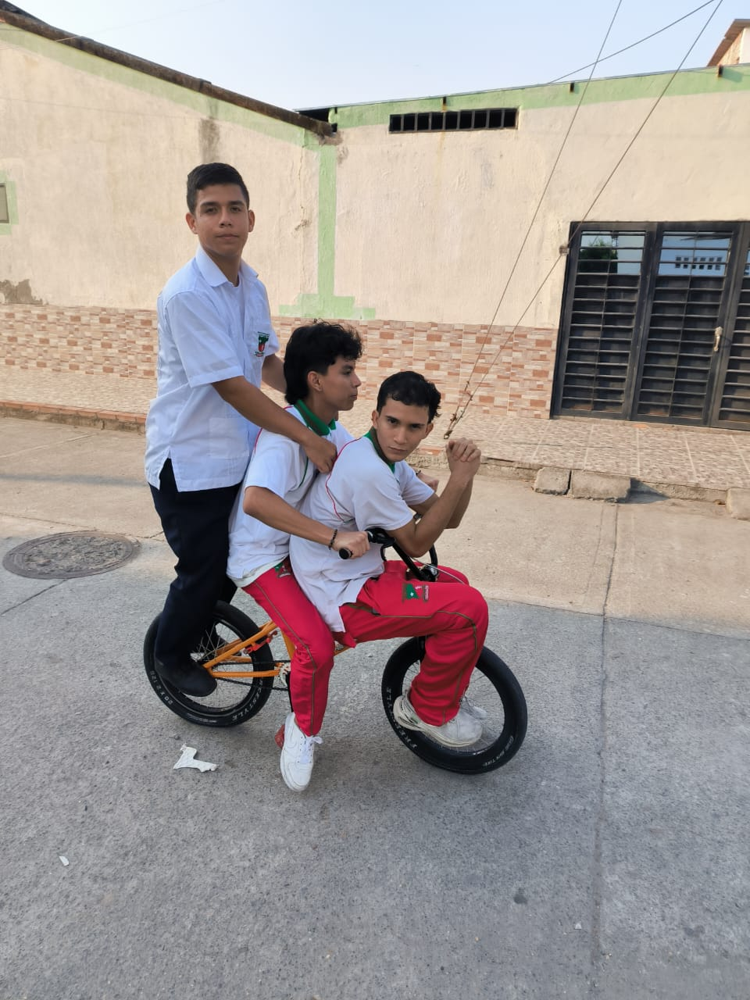
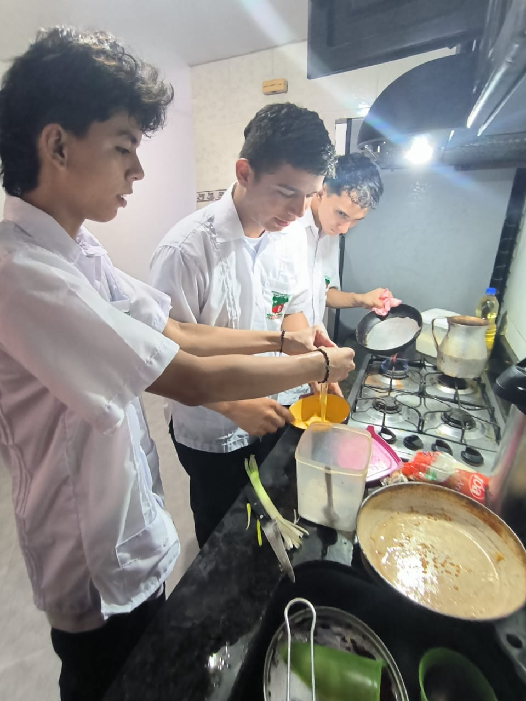
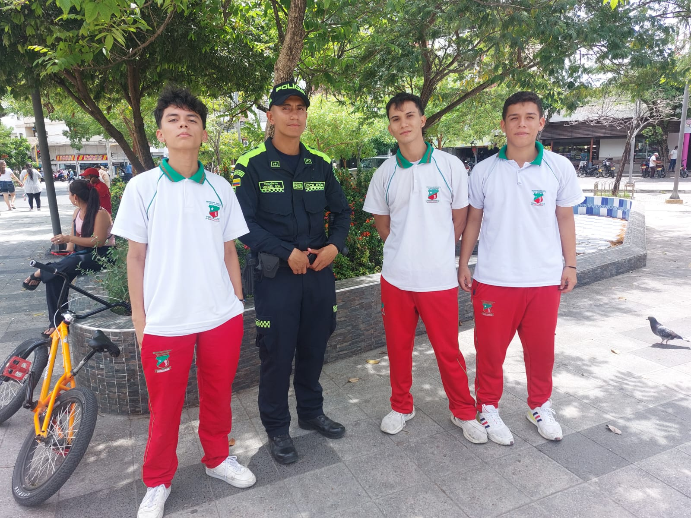
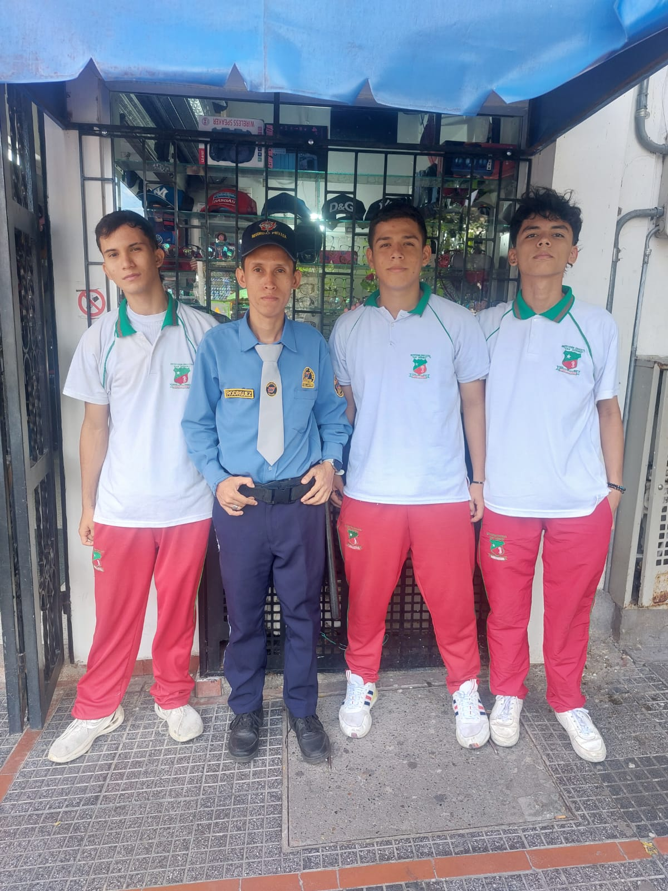

BIENVENIDO
Estás en la página Los Borrachos San Isidoro 11-3
Aquí veras todo sobre nuestra vida
Daniel Felipe Rodriguez


Juan Jose Moreno Perez
Juan David Hernandez
CUARTA FOTO: Los tres juntos.

Esta foto fue tomada en la
Los tres estamos juntos ya
que nos llevamos muy buenos
como amigos, vivimos
cerca el uno del otro.
Nuestras familias se conocen
y en todos los trabajos
grupales siempre hemos
estado los tres.
QUINTA FOTO: Nuestras Familias.


Esta es mi madre
hermosa.
Estos son mis abuelos.
Este soy yo y mi tio.
SEXTA FOTO: Nuestras Mascotas.

En esta foto aparecemos
los tres junto con nuestras
Al lado derecho de la foto
se puede ver un leve
photoshop,esto es
porque el perro
es de raza pitbull pura
y tiene severo temperamento
que da miedo.
SEPTIMA FOTO: Haciendo una actividad.


En esta foto aparecemos
los tres, cada uno haciendo
una actividad como lo es
HIMNO DE LA INSTITUCION EDUCATIVA SAN ISIDORO
OCTAVA FOTO: Bañando las mascotas.


En esta foto aparecemos
los tres, cada uno bañando
por primera vez en la vida
a sus mascotas.
Por primera vez en la vida,
les demostramos a nuestras
mascotas que las amamos.
Ahora nos pregntamos,
por que es importante
NOVENA FOTO: Los tres en la cicla.
En esta foto aparecemos
los tres en una bicicleta.
Despues de tomar
esta foto me lleve
a Juan Jose a pasear
y le pase por encima
de 4 policias, me
gane una madreada
pero valio la pena.
DECIMA FOTO: Los 3 cocinando.
En esta foto aparecemos
los tres cocinando
dejamos la cocina en el
piso y demostramos
nuestra gran habilidad
para hacer tortilla.
DECIMA PRIMERA FOTO: Lavando la loza.


En esta foto aparecemos
los tres, cada uno lavando
la loza
de hace tres dias.
Por primera vez en la vida,
ayudamos en las tareas
de la casa.
DECIMA SEGUNDA FOTO: Haciendo ejercicio.
En esta foto aparecemos
los tres haciendo ejercicio
Despues de hacer como
100 lagartijas nos quedo
doliendo el cuerpo pero
todo sea por la tarea.
DECIMA TERCERA FOTO: Jugando futbol.
En esta foto aparecemos
los tres jugando un deporte
(futbol). Aqui estamos
demostrando que en el
San Isidoro no somos
solo ñeros si no que
tambien amantes del deporte.
JUEGO DE LAS PALMAS Y EL ABECEDARIO
El juego de las palmas
El juego consiste en chocar las palmas
mientras que decimos el abecedario
DECIMA CUARTA FOTO: Con un Policia
En esta foto aparecemos
los tres junto al policia
el cual se encontraba
en servicio.
DECIMA QUINTA FOTO: Con un vigilante
En esta foto aparecemos
los tres junto al vigilante
el cual se encontraba
en servicio.
DECIMA SEXTA FOTO: Con un Cura

En esta foto aparecemos
los tres junto al Cura
que mantiene viniendo al
colegio.
Esta foto fue tomada detras
De la catedral.
ESTA ES UNA PAGINA WEB DE TIPO ACADEMICA DESARROLLADA CON EL OBJETIVO DE APRENDER HTML. SIN FINES DE LUCRO. CUALQUIER OBSERVACION COMUNICARSE AL CORREO CORREO DE JUANJOMO
go to up go to down